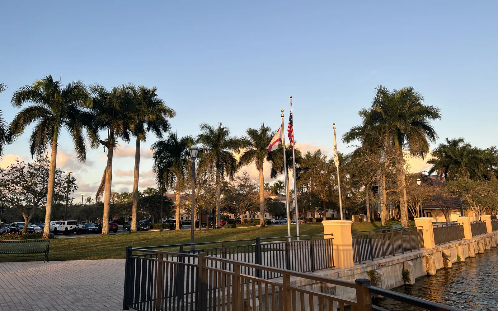

Homes for sale in Weston, FL are mostly single-family houses and townhomes in planned, often gated communities built around lakes, with some condos. It's one of the more expensive suburbs in Broward: the median house sold for about $900,000 in September 2026. Families often look at Weston for its schools and its large Latin American community. Rui Cunha's office is in Deerfield Beach, and he works with buyers across Broward, including Weston.
What it's like to live in Weston
Weston sits at the western edge of Broward County, next to the Everglades, where I-75 meets I-595/State Road 84. Florida's Office of Economic and Demographic Research estimated its population at 68,249 as of April 2024 (Florida EDR).
The city was laid out as a master-planned community: neighborhoods are grouped around lakes, golf courses and parks, and most have a homeowners association (HOA). Weston Town Center is the main spot for restaurants and shops. There's no beach, so life here is about parks, sports, schools and quiet streets.
It's also a very international city. In the Census Bureau's 2020–2024 American Community Survey, about 37,000 of Weston's roughly 70,700 residents were born outside the US. The largest groups were born in Venezuela (about 10,300) and Colombia (about 6,900) (U.S. Census ACS via Census Reporter). The Sun Sentinel has reported on how Venezuelan families have shaped the city's businesses and culture, which is why locals sometimes call it "Westonzuela" (Sun Sentinel via SOLWD, January 2026).
Neighborhoods and communities
- Savanna. A large gated community of about 2,819 single-family homes and townhomes, built around inland lakes (BEX Realty).
- Weston Hills Country Club. Subdivisions built around a country club.
- Windmill Ranch Estates and The Ridges. Communities at the upper end of the Weston market.
- Bonaventure. One of the older parts of Weston, with a mix of houses, townhomes and condos.
These are a few of the dozens of communities in the city (BEX Realty). Each has its own HOA rules and fees, and prices vary a lot by lot size, lake view and the age of the house. Rui can pull recent sales community by community.
Weston market snapshot
PBP Real Estate's analysis of BeachesMLS data shows a median house price of about $901,000 in Weston in September 2026, down 4.4% from September 2025. Houses sold in about 38 days on average. The median condo or townhouse price was $460,000 (PBP Real Estate, updated October 2026).
The same report counted about 4.3 months of house inventory and 8.6 months for condos and townhomes, and nearly half of the houses for sale had cut their price. In plain terms, buyers have more room to negotiate than a few years ago. Monthly medians move around in a small city, so ask Rui for recent sales in the specific community you want.
Practical notes: HOAs, insurance and condos
HOA rules and fees. Almost every Weston neighborhood has an HOA, and many are gated. Before you make an offer, read the HOA documents: monthly fees, what they cover, rules on rentals, parking, pets and exterior changes, and any pending special assessments. If you plan to rent the home, check the rental rules first. Some communities limit leasing.
Flood and insurance. Weston has no ocean storm surge, but many homes sit on lakes and the city borders the Everglades. Check the flood zone for each address and get real homeowners and flood quotes before you sign. Citizens policyholders must carry flood coverage as that requirement phases in through 2027 (News4JAX).
Condos. If you buy a condo in a building of three or more stories, Florida's condo safety laws require milestone inspections and a Structural Integrity Reserve Study with funded reserves (SB 154, 2023; Rimkus). Ask for the reserve study, budget and assessment history.
Homestead. If the home will be your primary residence, ask a CPA about Florida's homestead exemption. Second homes and non-residents don't qualify.
Schools
Weston is served by Broward County Public Schools, and Cypress Bay High School is in the city. School quality is one of the main reasons families choose Weston, but assignments depend on the exact address. Use the district's school locator and check current school grades with the Florida Department of Education before you buy.
Getting around
Weston connects to I-75 and I-595, which lead toward Fort Lauderdale and its airport to the east and to Miami-Dade to the south. Many residents commute by car, so test your route at rush hour before you commit.
Working with Rui in Weston
Rui has worked in South Florida real estate since 2003, as a mortgage broker, a broker and a licensed General Contractor, which helps when you're comparing an older house in Bonaventure with a newer one in a gated community. He can help you buy a home, look into an ITIN mortgage or understand the steps for international buyers. Use the mortgage calculator to include taxes, insurance and HOA fees, and compare with Fort Lauderdale and Parkland.
FAQ
What is the median home price in Weston, FL?
PBP Real Estate's analysis of BeachesMLS data put the median house price at about $901,000 in September 2026, down 4.4% from a year earlier. The median condo or townhouse price was $460,000.
Do all Weston homes have an HOA?
Most Weston neighborhoods have a homeowners association, and many are gated. Fees and rules vary a lot, so read the HOA documents, including rental rules, before you make an offer.
Is there a large Latin American community in Weston?
Yes. In the Census Bureau's 2020–2024 survey, about half of Weston's residents were born outside the US, with Venezuela and Colombia as the largest countries of birth.
Can I buy in Weston without a Social Security number?
Many buyers use an ITIN mortgage, subject to lender approval. See our ITIN mortgage guide or contact Rui.
Talk to Rui
Thinking about Weston? Ask Rui for recent sales in the communities you like.